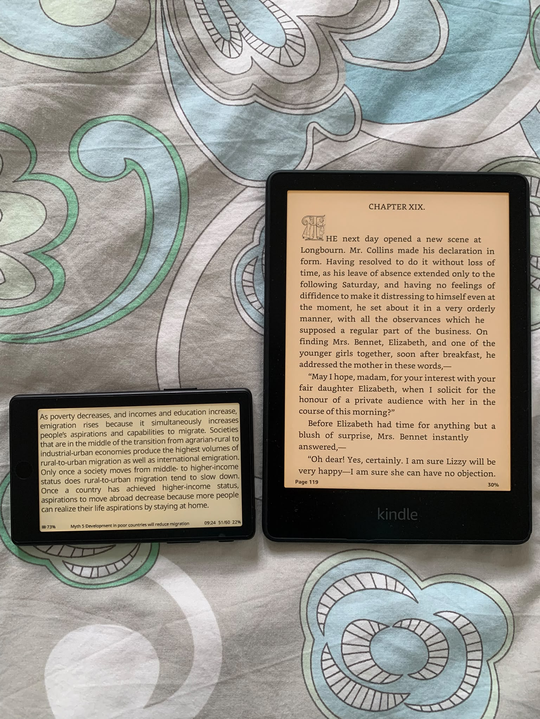

XTEINK X4 Pro review
Created at: 2026-11-07

The photo above is the NZD $200 X4 Pro next to my Kindle Paperwhite.
I always wanted to check if these ultra-small e-readers were a gimmick or not. My biggest concern being the "reading comfort" metric, specifically the screen length, and how many words could even fit on the screen before frequent line breaks would start to drive me nuts.
Well, that hasn't been a problem at all. I mostly use the device on horizontal mode, which manages to fit about 58 characters on my current font size. This amount of characters is within the largely accepted 45-75 characters per line metric for readability, and relatively close to the "optimum" of 66 characters per line for printed text.
Other concerns were around battery, backlight, firmware, etc. All of those are broken down into a list of pros and cons bellow:
Pros
- The back lights can be adjusted for both brightness and warmth.
- Physical buttons allow me to deactivate "touch mode" and turn pages by pressing the side buttons.
- Small footprint means that it can fit in any pocket. It is about 2/3 the area of a regular phone, but thinner. It comes with a magnetic back, so you can snap it to the back of your phone. This makes it fairly easy to bring the device with you if you are going on a hike or you are in-between appointments or just doing a short travel somewhere.
- Possible to jailbreak for better firmware.
Cons
- In comparison to my Kindle, the battery life time is not as good. I still use my Kindle more, because of my habit of reading before bed on my Kindle, but the Kindle battery holds at least 2x or 3x longer for the same level of use as compared to the xteink x4 pro.
- Default firmware is not fit for purpose. Most people that buy this device seem to agree with that. They jailbreak the device and load it with Cross Point Reader immediately. I had to do this for a better experience.
- The charger cable is finicky. They decided to go with a magnetic style cable that "snaps" into a little socket at the back of the device. I would much rather just have a USB-C slot I could plug a cable into.
- Either the Calibre integration is also finicky or I haven't worked that out properly yet. I am doing book synchronisation via "Calibre server" which doesn't feel as good as plugin a cable onto the laptop and pressing a button.
Some specifics about Cross Point Reader
- Cross Point is being actively maintained - but some features may lag. For example, in the middle of writing this post I realised that the "clippings and highlights" feature wasn't available on the X4. Then I went to their GitHub and saw that a release from last week added the feature! That is awesome, but at the same time it is interesting that this feature wasn't in the base, default, installation from the gate go - it's a killer feature.
- The documentation and functionality is not always super intuitive. For example, if you haven't uploaded a dictionary to the device, all the "dictionary" options are hidden. So you don't even know if it is possible to look-up a word, and where to go. That led me on a hunt across all menus to see if the feature was simply disabled, but in the end, the information explaining that the Dictionary feature was hidden in the absence of a dictionary file was lightly noted on a paragraph in the middle of the user guide. As it is natural to not have any dictionaries when setting up the device, it would be much better if the menu item was not hidden but simply said "no dictionaries".